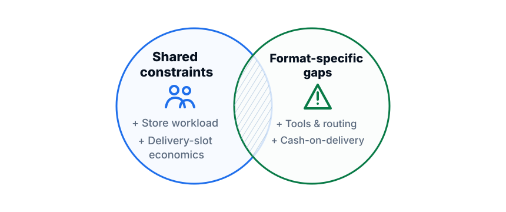
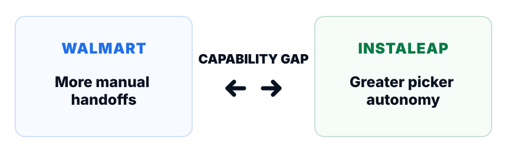
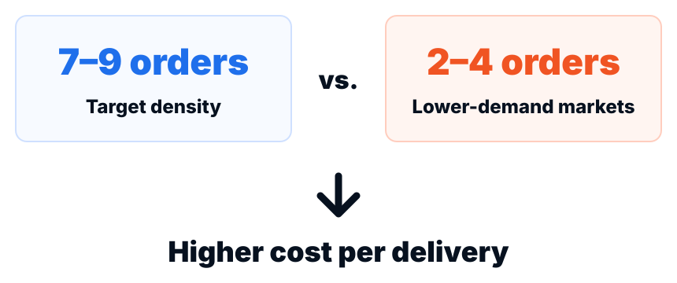

Walmart Supercenter & Express
- Reference operating model
- Walmart tools
- Local Fleet + 3P delivery
Walmart · Strategic Discovery
Understanding what needed to change before Walmart could standardize OnDemand across its retail formats.
The challenge
Common model?
The challenge wasn't simply to replicate Supercenter's model. We needed to understand how each format actually operated, what its technology could support, and why the economics of last-mile delivery varied by market.
My approach
Mapped the end-to-end process to understand roles, workflows, dependencies, and operational gaps.
Compared platform capabilities against the workflows to identify gaps and translate them into product requirements.
Analyzed last-mile costs to understand the effect of order density and compare Local Fleet with 3P delivery.
I led the research approach from planning and fieldwork through process modeling, analysis, synthesis, and working sessions with Product.
What we learned
Operations
The operating models shared constraints, but each format also had gaps shaped by its technology, customer behavior, and local operating conditions.

Technology
Instaleap gave pickers greater control over the order, while Walmart's workflow relied more heavily on manual work, external communication, and operational handoffs.

The gaps were translated into a functional backlog for Walmart's app.
Economics

When demand was lower, fewer orders had to absorb the cost of each Local Fleet route. 3P delivery offered an alternative where costs were tied more directly to completed orders.
What it changed
Baseline for operational migration initiatives
Functional backlog for Walmart's app
Evidence for leadership's evaluation of the last-mile model
Standardization required aligning the operating model, the technology supporting it, and its economics.
My involvement ended after the final presentation, so I don't attribute downstream implementation or business outcomes to this work.